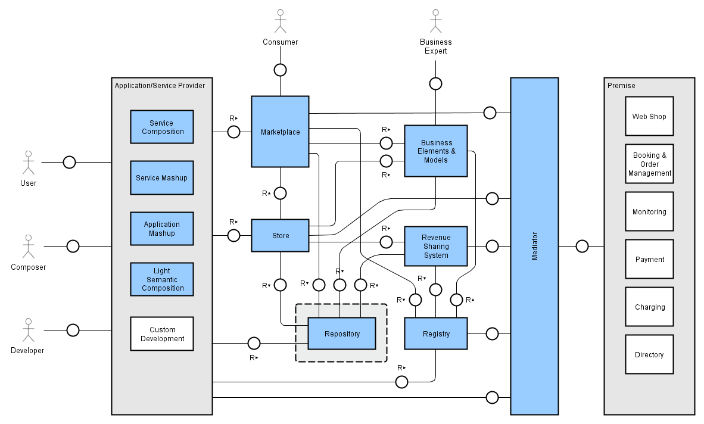
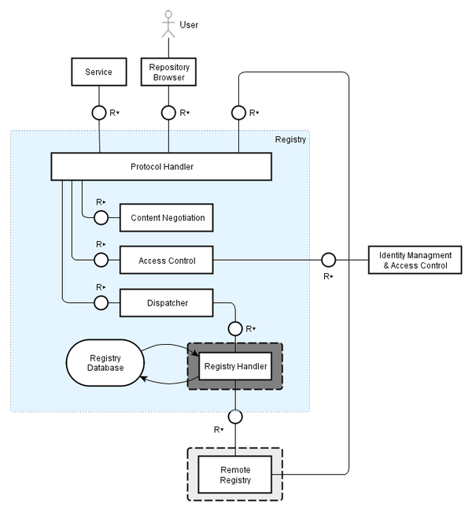
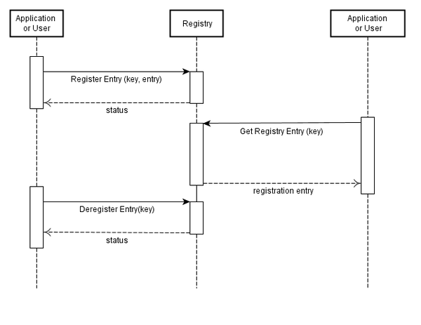

Torsten Leidig, SAP AG

The Registry acts as a universal directory of information used for the maintenance, administration, deployment and retrieval of services. Existing (running) service endpoints as well as information to create an actual service instance and endpoint are registered. This GE will be used by potentially all GE in the Apps Chapter in order to build a common database of run-time configuration options and properties. It can also be used by GE of other chapters, such as the Cloud, Security, Data or IoT to announce their instance specific information to the rest of the platform components. In a FI-WARE instance there could be multiple instances of the Registry for different purposes and usage domains, which are accessed uniformly according the Repository RESTful interface specification.
The basic data elements of the registry are the Registry Entry containing the actual information and the Registry Key to access the data entries in the Registry. A registry entry can be a single atomic piece of data or a structured data such as a record of named properties (name/value pairs). The exact data model and its encoding will be defined in the interface specification. The schema (the exact names of properties and their value encoding) is the matter of the application developer or the community of developers in a respective application domain.
The Registry Key is used for accessing individual entries or a collection of entries is often organized as path into an underlying registry internal organization such as a tree.
The Registry Key is used to identified by directory path
e.g. /provider/transport/


The Register Entry operation is used to write or update a register information entry into the Registry. Two parameters are essentially needed:
A registry key is returned.
For the Deregister Entry operation only the Registry Key of the Registry Entry is needed:
It must be possible to directly retrieve a Registry Entry using a unique Key using the Get Registry Entry operation. In this case one parameter is sufficient:
The Query Registry Entries operation allows the retrieval of Registry Entries matching a filter expression:
The Registry API is a RESTful, resource-oriented API accessed via HTTP that uses various representations for information interchange. The Registry Enabler is used to store information on service instances necessary for run-time execution.
The Registry API supports XML/RDF, Turtle, JSON, Atom HTML for delivering information for registry entries. The request format is specified using the Content-Type header and is required for operations that have a request body. The response format can be specified in requests using the Accept header. Note that it is possible for a response to be serialized using a format different from the request.
In a concrete implementation of this GE other formats like RSS or Atom may also be possible.
The Distinguished Entry Name (DEN) is used to unambiguously identify registry entries. In analogy to the LDAP protocol (RFC 4510, 4512, 4514, 4516, 4517) we assume distinguished entry names can be expressed in a hierarchical way.
Examples:
/c=de/o=University%20of%20Michigan - is a DEN similar to an LDAP DN
/de/University%20of%20Michigan - is an alternative representation of the DEN assuming that there is a default hierarchy
The registry is relying on Web principles:
GET /de/service/stores/?attributes=Name,serviceResource,endpoint
Accept: application/json
returns
[ { DEN: "/de/service/stores/store1",
Name: "Store1 Name",
service: "http://fiware.org/usdl/servicestorexyz",
endpoint: "http://fiware-platform.org/service/store1/instance4711"
},
...
]